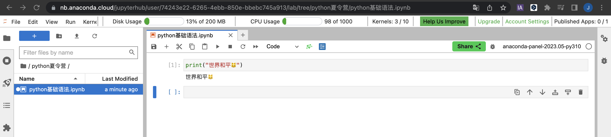

print("世界和平")Python基本概念与指令输入
Python入门
一、Python是什么
1. 最流行的编程语言
Python是一种流行的、易学易用的编程语言，它开发于1991年。Python的设计注重代码的可读性和简洁性，这使得它成为了初学者和专业开发者喜爱的语言。
截止到目前，学习Python的人数相当之多，它在计算机编程教育和软件开发领域的受欢迎程度非常高，甚至可以认为Python是世界上最受欢迎的编程语言之一。
使用Python，你可以编写各种类型的程序，从简单的脚本到复杂的网站和应用程序，甚至是人工智能和数据科学领域的应用。
仔细看Python的标志——两只蓝色和黄色的小蟒蛇，你今后会在许多地方见到它。在本次夏令营中，我们会带领你们使用这个强大、灵活且有趣的编程语言，学习如何对数据进行清洗，以及对我们清洗完成的数据进行可视化处理。
2. Python文件
在我们的日常电脑使用中，我们会遇到各种各样的文件，它们的类型和功能各不相同。例如，mp4文件通常是用来存储音视频数据，而pdf文件则是一种用于存储文本和图片的格式。
Python文件是一种特殊类型的文件，通常使用.py扩展名。这些文件包含用Python编程语言编写的代码。与其他文件不同，Python文件并不直接存储音视频或图像等内容，而是用于存储计算机程序的源代码。
在Python文件中，我们可以使用Python编程语言来编写程序，这些程序可以完成各种任务，比如数学计算、数据处理、网络操作等。一旦编写完成，我们可以通过Python解释器来执行这些文件中的代码，让计算机按照我们编写的指令来完成相应的任务。
总的来说，Python文件是一种特殊的文本文件，它们承载着用Python语言编写的程序代码，为我们提供了一种强大且灵活的方式来控制计算机的行为。
二、如何运行Python文件
在我们的夏令营中，我们使用JupyterLab作为我们的开发环境。JupyterLab是一个交互式的开发环境，我们可以使用它编写、运行和分享代码。另外，JupyterLab已经做好了Python环境的配置，对于新手来说，可以省去很大一部分工作，更轻松的进行Python学习。
首先，我们进入JupyterLab的界面。通常来说，你的默认浏览器会显示一个网页，这就是JupyterLab的用户界面，这个界面类似于文件资源管理器，你可以在其中浏览文件夹和文件。
然后，我们点击创建一个Python File。这样一来，我们就成功创建了一个.py文件了，但是我们的文件中还没有代码，需要我们进行进一步的操作。
在左边的目录中，我们可以看到我们新建的文件，通常来说，它会被命名为Untitled.py，我们可以在目录中直接修改文件名。
点击进入Python文件之后，我们就可以开始撰写代码了，试试看，输入：
暂时你还不领会这段代码的含义，但是没关系，在后面的教程中，我们会慢慢来告诉你。
接下来，回到主菜单(你可以点击标题栏旁边的’+‘)，点击’Terminal’，你就会进入到终端(这是一个一个黑色的窗口)，在这里输入你刚才创建的文件的名称，然后按下回车键。你就会发现，刚才我们输入在Python文件中的代码被执行了，终端中输出了：
世界和平
我们刚才在Python文件中输入的代码的含义就是，打印”世界和平”这四个字。
Note
在终端中，输入python进入python解释器后，即可运行python代码
三、如何运行.ipynb文件
1. 什么是.ipynb文件
通过刚才的操作，你可能会发现，运行Python文件的步骤可能有些太多了，而且我们也没办法直观的看到我们的代码所产生的效果。
在我们所使用的JupyterLab中，有一种更简便的方式来运行我们的代码，那就是使用.ipynb格式的文件。
.ipynb文件是Jupyter Notebook的保存格式，它是一个JSON（JavaScript Object Notation）格式的文本文件，其中包含了Jupyter Notebook的所有内容，包括代码、输出结果、文本说明等。
2. 如何运行.ipynb文件
当我们打开一个.ipynb格式的文件后就会发现，这里的界面与刚才的Python File界面不同，界面中有一些块状元素，这就是我们撰写代码的地方。
.ipynb格式的文件中的块分为两类，一类是markdown块，用于书写文本内容，另一类就是代码块，我们可以很方便地在其中输入代码，然后点击标题栏下方的运行按钮，或者按下Shift + Enter就可以执行我们的代码。

试试看新建一个.ipynb文件，然后输入刚才的代码，你会很直观的看到代码的运行结果。
现在，你可以看看下面的视频，这会帮助你加深对文件运行方法的理解。
在后面的学习中，我们会经常用到.ipynb文件，大家可以从微信群中下载所需要用到的文件，然后上传到JupyterLab中打开。
四、Python基础语法
在之前的学习中，我们了解到Python是一种编程语言，与自然语言（例如汉语）截然不同。虽然它们是两种不同的语言类型，但编程语言与自然语言相似，都需要遵守语法规则。这些语法规则用于规范句子和表达式的结构，以确保正确的表达和理解。
因此，不要感到畏难，你可以像学习一门自然语言一样来学习Python。一旦掌握了Python的基础语法规则，你就可以与计算机很方便地进行交流，编写出功能强大的程序。
现在，打开你的JupyterLab，新建一个.ipynb文件，让我们尝试编写一个简单的表达式，通过这个例子初步认识一下Python的语法规则。
Note
通俗地说，在编程中，表达式就是一段产生值的代码。
下面是一些简单的表达式，用于帮助你理解：
算术表达式：2 + 3 * 4 （计算结果为 14）
逻辑表达式：a > b and c <= 10 （根据变量a、b和c的值判断是否满足条件）
2023 + 40906113在上面的例子中，我们编写了一个简单的算术表达式，用来计算2023与4090的和。在执行后，我们可以在输出区域看到运算结果：
6113
现在，让我们尝试另外一种表达式：逻辑表达式。
9 > 1True上面的表达式对9和1的大小进行了判断。由于9 > 1成立，因此程序返回True；相反，如果我们编写1 > 9，则会返回False。在这里，True和False统称为布尔值，在后续的数据类型课程中，我们会详细地介绍它们。
在编写代码时，难免会遇到错误。
如果我们让一个未赋值的变量(也就是一个空值)与数字进行比较会发生什么呢？现在，试试看删除上面的表达式中>右侧的数字1，重新执行代码。
9 > SyntaxError: invalid syntax (1639543893.py, line 1)在上述代码中，我们进行了一个比较运算，但只填入了一个值，导致程序报错。
终端提示我们这个错误叫做SyntaxError，这个错误通常表示我们的代码语法写错了，不符合Python的规则。换句话说，我们的代码不能被计算机正确地理解和执行。遇到这种情况，我们需要检查代码，确保语法正确，以便程序能够顺利运行。
现在，我们已经初步了解了Python的语法规则，就像我们在自然语言中需要遵守语法规则一样。在接下来的学习中，我们将一起深入探讨Python的语法规则，并逐步提升我们的编程能力。
Python基础语法
一、变量与赋值
1. 什么是变量
变量是用来存储和表示数据的一种抽象概念。它们为数据赋予了一个标识符，以便我们可以在程序中引用和操作这些数据。通过变量，我们可以方便地在代码中存储和访问数据，并在程序执行过程中对数据进行修改和处理。
2. 变量的命名规则
- 变量名必须以字母（A-Z，a-z）或下划线（_）开头，不可以以数字开头。
- 变量名可以包含字母、数字（0-9）和下划线（_）。
- 变量名区分大小写，例如age和Age是两个不同的变量。
- 变量名不能使用Python的保留关键字，如if、else、while等。
- 变量名应具有描述性，能够清晰地表示变量的含义。
二、注释的撰写与阅读
三、行与缩进
变量赋值
在Python中，变量用于存储和表示数据。变量赋值是将一个值与一个变量关联起来的过程。通过变量，我们可以在程序中存储和操作数据。
变量的命名规则
在Python中，变量的命名需要遵循以下规则：
- 变量名只能包含字母（大小写敏感）、数字和下划线（_）。
- 变量名不能以数字开头。
- 变量名不能使用Python关键字和保留字，如if、for、while等。
- 变量名应具有描述性，能够清晰地表示变量的含义。
变量的赋值
在Python中，使用等号（=）进行变量赋值操作。等号 ( = ) 运算符左边是一个变量名,等号 ( = ) 运算符右边是存储在变量中的值
下面是一个例子，将数字5赋值给变量x：
x = 5变量的使用
一旦变量被赋值，我们可以在程序中使用它来表示和操作存储的值。
下面是一个例子，使用变量x计算其平方并打印结果：
x = 5
square = x * x
print(square)25变量的重新赋值
在程序中，我们可以多次为同一个变量赋值，新的赋值将覆盖之前的值。
下面是一个例子，演示变量的重新赋值：
x = 5
print(x) # 输出：5
x = 10
print(x) # 输出：10题型一
将字符串”Hello, Python!“赋值给变量message，然后打印出变量的值。
message = "Hello, Python!"
print(message)Hello, Python!题型二 将变量的值用于字符串拼接，使用input()函数接收输入值，然后使用f string，将这变量的值拼接到一句话中。最后，通过print()函数将句子打印输出。
f string的用法是，在字符串中，需要引入变量值的位置写上一对大括号，将要引入的变量名放在打括号中，用法举例：
# 用户输入姓名和年龄
name = input("请输入您的姓名：")
age = input("请输入您的年龄：")
# 创建自我介绍的句子并打印输出
introduction = f"我的名字是{name}，今年{age}岁。"
print(introduction)我的名字是Jack，今年18岁。另外一种字符串的格式化方式
f string 和 .format是两种不同的格式化字符串的方法
.format的用法是在字符串中使用大括号占位，然后使用.format给出要填进去的变量，默认按照顺序填入，如果需要乱序或者一个变量使用多次，需要在大括号中给出后面format变量的序号，举例：
name1 = "apple"
name2 = "orange"
print("I hava a {} and {}.".format(name1,name2))
print("I hava a {}, {} and {}.".format(name1,name1,name2))I hava a apple and orange.
I hava a apple, apple and orange.注释
在Python中，注释用于对代码进行解释和说明，对于其他人（包括自己）来理解代码的作用和意图非常有帮助。注释是在代码中添加的文本，Python解释器会忽略它们。
单行注释
在Python中，使用#符号开始的文本被视为单行注释。在#后面的所有内容都被视为注释，不会被执行。
下面是一个例子，演示如何使用单行注释：
# 这是一个单行注释
print("Hello, World!") # 打印输出文本Hello, World!上述代码中，第一行是一个注释，用于对代码的目的进行解释。第二行是打印输出语句，不受注释的影响。
多行注释
在Python中，使用三个引号（双引号或单引号都可以）包围的文本被视为多行注释。多行注释可以跨越多行，并且可以包含多个段落。
下面是一个例子，演示如何使用多行注释：
"""
这是一个多行注释的示例。
它可以跨越多行，并且可以包含多个段落。
以下是代码的主要功能：
- 输入用户的姓名
- 打印欢迎消息和姓名
"""
name = input("请输入您的姓名：")
print("欢迎，" + name + "!")欢迎，jack!
Note
如果想一次性注释多行的话，鼠标选取后，按ctl+/进行注释
行和缩进
在Python中，行用于分隔不同的代码语句，而缩进用于表示代码块（例如条件语句、循环等）的范围。
行
每一行都包含一个完整的代码语句或表达式。下面是一个例子：
print("Hello, world!")Hello, world!上述代码中，print(“Hello, world!”)是一行代码，用于输出字符串”Hello, world!“。
缩进
在Python中，缩进通过空格或制表符来实现，用于表示代码块的开始和结束。通常使用4个空格作为标准缩进。
Warning
缩进造成的错误，应该名列 Python 错误榜第一
下面是一个例子，演示如何在代码块中使用缩进：
if x>0:
print("x是正数")
print("干得漂亮！")
else:
print ("x是负数")
print ("可惜哇嗷！") x是正数
干得漂亮！上述代码中，if语句和else语句是两个代码块，它们的范围由缩进表示。在if代码块中，两个print语句都会在条件满足时执行。在else代码块中，同样有两个print语句。（大家可以自己修改下x范围）
Note
养成良好编码习惯：
保持一致的缩进：使用相同数量的空格或制表符进行缩进，并在整个代码中保持一致。这有助于提高代码的可读性；
使用合适的缩进级别：根据代码逻辑嵌套关系，选择适当的缩进级别。通常建议每个缩进级别使用4个空格；
使用注释：在关键地方添加注释，解释代码的目的和功能。注释可以提高代码的可读性和可维护性；
注意行的长度：尽量将每行代码控制在适当的长度范围内，通常推荐不超过80个字符。可以使用换行符（）或括号来换行。
多行语句
使用反斜杠
使用反斜杠（\）将一行代码分成多行。下面是一个例子：
total = 1 + \
2 * \
3
print(total)7上述代码中，total变量的值是1+2*3，通过使用反斜杠在多行中编写，使代码更易读。
使用括号
另一种方式是使用括号（圆括号、方括号、花括号）来隔行编写多行语句。下面是一个例子：
total = (1 +
2 *
3)
print(total)7